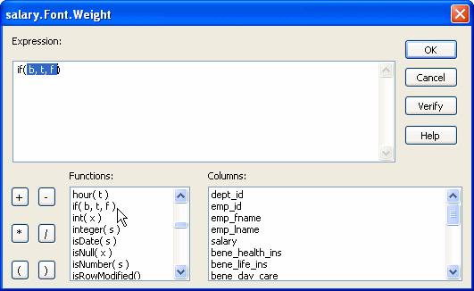
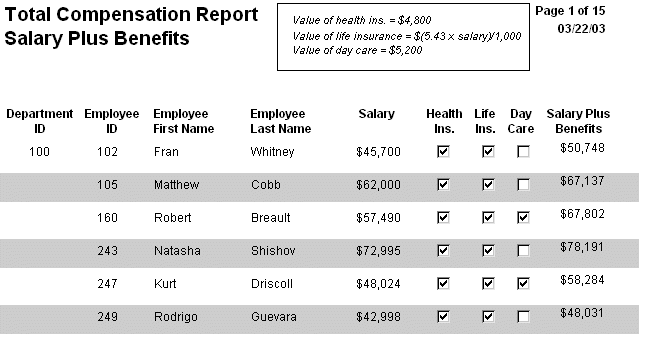
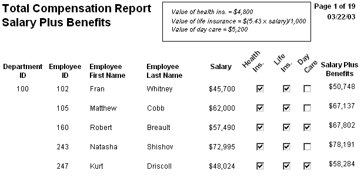
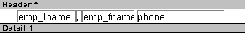
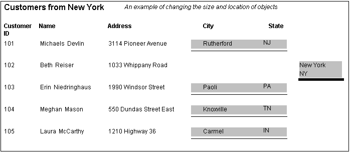

Previous Next
Modifying properties conditionally at runtime
"Modifying properties at
runtime" described
how you can use conditional expressions that are evaluated at runtime
to highlight information in a DataWindow object. This section presents
a procedure for modifying properties at runtime and some examples.
 To modify properties conditionally at runtime:
To modify properties conditionally at runtime:
Position the pointer on the control, band,
or DataWindow object background whose properties you want to modify at
runtime.
Select Properties from the pop-up menu, then select
the page that contains the property you want to modify at runtime.
Click the button next to the property you want
to change.
Scroll the list of functions in the Functions
box until you see the IF function, and then select
it:

Replace the b (boolean) with
your condition (for example, salary>40000).
You can select columns and functions and use the buttons to
add the symbols shown on them.
Replace the t (true) with
the value to use for the property if the condition is true.
Values to use for properties are usually numbers. They are
different for each property. For more information about property
values that can be set on the Expressions page, see "Supplying property values".
 Set Font.Weight property to 700 for bold Font properties such as Italic, Strikethrough, and Underline
take a boolean value, but to specify a value for bold, you use the
Font.Weight property, which takes a range of values. For values
and an example, see "Font.Weight".
Set Font.Weight property to 700 for bold Font properties such as Italic, Strikethrough, and Underline
take a boolean value, but to specify a value for bold, you use the
Font.Weight property, which takes a range of values. For values
and an example, see "Font.Weight".
For complete information about what the valid values are for
all properties of controls in the DataWindow object, see the discussion
of DataWindow object properties in the DataWindow Reference
or
online Help.
Replace the f (false) with
the value to use for the property if the condition is false.
Click OK.
For examples, see "Example 1: creating a gray
bar effect", "Example 2: rotating controls", "Example 3: highlighting
rows of data", and "Example 4: changing the
size and location of controls".
Example 1: creating a gray bar effect
The following DataWindow object shows alternate rows with a light
gray bar. The gray bars make it easier to track data values across
the row:

To create the gray bar effect:
- Add a rectangle control to the detail band and size it so
that it surrounds the controls you want highlighted.
To make sure that you have selected the detail band, select
the Position tab in the Properties view and select Band from the
Layer drop-down list.
- To make it easier to see what you are doing in the
Design view, select the General tab and set the Brush Color to White
and the Pen Color to Black. A narrow black line forms a boundary
around the rectangle.
- Select Send to Back from the rectangle's
pop-up menu.
- To hide the border of the rectangle, set the Pen
Style to No Visible Line.
- Click the button next to the Brush Color property
on the General page.
- In the Modify Expression dialog box, enter the following
expression for the Brush.Color property:
If(mod(getrow(),2 )=1, rgb(255, 255, 255 ), rgb(240, 240, 240 ))
The mod function takes the row number (getrow()),
divides it by 2, then returns
the remainder. The remainder can be either 0 or 1. If the row number
is odd, mod returns 1; if the row number is even, mod returns
0.
The expression mod(getrow(),2)=1 distinguishes
odd rows from even rows.
The rgb function specifies maximum amounts
of red, green, and blue: rgb (255, 255, 255).
Specifying 255 for red, green, and blue results in the color white.
If the row number is odd (the condition evaluates as true),
the rectangle displays as white. If the row number is even (the
condition evaluates as false), the rectangle displays as light gray
(rgb (240, 240, 240)).
Example 2: rotating controls
The following DataWindow object shows the column headers for Health Insurance,
Life Insurance, and Day Care rotated 45 degrees.

To rotate each of these three text controls:
- Select one of the controls, then use Ctrl + click
to select the other two controls.
The Properties view changes to show the properties that are
common to all selected controls.
- On the Font page in the Properties view, click the
button next to the Escapement property.
- Enter the number 450 in the Modify Expression dialog
box and click OK.
The value entered for font escapement is in tenths of degrees,
so the number 450 means 45 degrees. You do not have to specify a
condition. Typically, you do not specify a condition for control
rotation.
The rotation of the controls does not change in the Design
view.
- To see the change, close and reopen the Preview
view.
Example 3: highlighting rows of data
The following DataWindow object is an employee phone list for a company
in Massachusetts. Out-of-state (not in Massachusetts) employees
are shown in bold and preceded by two asterisks (**):

This DataWindow object uses newspaper columns. To
understand how to create this DataWindow object without highlighting data,
see "Printing with newspaper-style
columns".
In the Design view, the detail band includes four controls:
the employee last name, a comma, the employee first name, and the
phone number:

To make these controls display in bold with two asterisks
if the employee is not from Massachusetts:
- Select one of the controls, then use Ctrl + Click
to select the other three controls.
The Properties view changes to show the properties that are
common to all selected controls.
- On the Font page in the Properties view, click the
button next to the Bold property.
- Enter the following expression in the Modify Expression
dialog box and click OK:
If(state = 'MA', 400, 700)
The expression states that if the value of the state column
is MA, use 400 as the font weight. This means employees from Massachusetts
display in the normal font. For any state except MA, use 700 as
the font weight. This means all other employees display in bold
font.
Logic that relies on the state column To use logic that relies on the state column,
you need to include the column in the data source. You can add the
column after creating the DataWindow object by modifying the data source.
Notice that the state column does not actually
appear anywhere in the DataWindow object. Values must be available but
do not need to be included in the DataWindow object.
- To insert two asterisks (**) in
front of the employee name if the employee is not from Massachusetts,
add a text control to the left of the employee name with the two
asterisks in bold.
- With the text control selected, click the button
next to its Visible property on the General page in the Properties
view.
- In the Modify Expression dialog box that displays,
enter the following expression and click OK:
If(state = 'MA', 0, 1)
This expression says that if the state of the employee is
MA (the true condition), the Visible property of the ** control
is off (indicated by 0). If the state of the employee is not MA
(the false condition), the Visible property of the ** control
is on (indicated by 1). The asterisks are visible next to that employee's
name.
Tip You can use underlines, italics, strikethrough, borders, and
colors to highlight information.
Example 4: changing the size and location of controls
The following DataWindow object shows city and state columns
enclosed in a rectangle and underlined. The columns change location
if the current row contains data for a customer from the state of
New York. The rectangle and the line change both location and size.

This example shows how to move the rectangle and line. The
process for columns is similar.
In the Design view, the rectangle and line display in one
location, with a single set of dimensions. The expressions you specify
are used only in Preview view and at runtime and all have the following
syntax:
If ( state='NY', true value, false value )
The false value is the same as the value
in Design view. All of the values used in this example are in PowerBuilder
Units (PBUs), the default unit of measure used for the DataWindow object.
To change properties of the rectangle and the line for rows
with the state column equal to New York:
- Select the rectangle, display
the Position page in the Properties view, and specify expressions
for the following properties:
| Property |
Expression |
|---|
| X |
if (state = 'NY',
2890, 1865) |
| Width |
if (state = 'NY',
500, 1000) |
| Height |
if (state = 'NY',
160, 120) |
- Select the line, display the Position page in the
Properties view, and specify expressions for the following properties:
| Property |
Expression |
|---|
| X1 |
if (state = 'NY',
2890, 1865) |
| Y1 |
if (state = 'NY',
168, 132) |
| X2 |
if (state = 'NY',
3400, 2865) |
| Y2 |
if (state = 'NY',
168, 132) |
- On the General page for the line, specify this expression
for Pen Width:
if (state = 'NY', 10, 4)
At runtime, the rectangle is taller and narrower, and the
line is shorter and has a wider pen width.